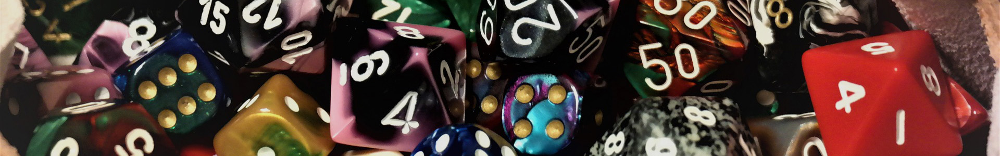

TRPG
TRPG(Table Talk Role Playing Game:テーブルトークRPG)とは、対話でストーリーを進めていくゲームである。CoCはTRPGの1つであり、ホラージャンルに属する。探索者は神や神話生物に遭遇するなどで狂気に陥っていき、探索者が無事に生還できるか、物語に含まれる謎を解明できるかどうかは、ダイスの目によって変わる。物語の展開は、己のひらめきと運命の女神の気分次第であるところがこのゲームのミソである。
用意するもの
- ルールブック：1人1冊持つことが望ましいが、最低限KP（キーパー）か誰か1人が持っていればよい
- 一緒にプレイする人：友人を誘うか、ネットやTRPGカフェなどを利用する手もある
- シナリオ（物語）：ルールブック掲載作品、BOOTHやPIXIVで配布しているもの等
- ダイス：クトゥルフWEBダイスが使い勝手がよい
- 探索キャラクター：ルールに従って能力値・技能値を割り振る（後述）